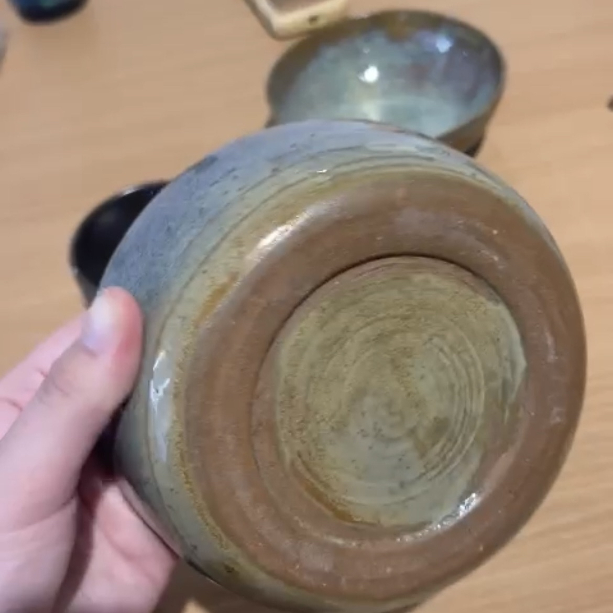

Soy alguien que siempre tiene que estar haciendo algo, y por eso tengo demasiados hobbys.
Voy a contarles los más importantes para mí!
(Ya mi carrera actoral y teatral la cuento en la página "Sobre mí")

Baile
Desde que soy pequeña amé bailar, siempre tuve idas y vueltas y conocí muchos estilos. Mis favorito era fusión (control corporal al 100%) y hoy en día es Heels (uso botas con tacos de punta).
Música
Fui a un secundario orientado en arte y música, en el que adquirí un conociendo avanzado en teoría musical y me hizo aprender a tocar varios instrumentos, como ser el bajo, guitarra, piano, violín y ukelele.
Un dato, teníamos que ensamblar con compañeros ya que realizábamos muestras de ensamble y canto para los padres de los alumnos, y tocábamos temas originales y/o covers.
Juegos
Tuve una época viciosa a los videojuegos, mis favoritos eran el Counter Strike Global Ofensive (CS-GO), el GTA V, Rainbow Six, Team Fortress 2, Minecraft y Paladins. En su mayoría eran shooters.
Agradeciéndole a la pandemia por adentrarme al mundo de la tecnología ꨄ︎
Manicura
También aprendí a hacerme uñas ya que me salía más rentable. Solo me las hago a mí ya que no tengo un certificado y los conocimientos suficientes como para usar otras manos o trabajar de ésto.
Patín sobre hielo
Uno de mis deportes favoritos. Me encantaba que me acostumbraba al clima frío y lo pasaba muy bien. No fui muy buena, pero me divertía demasiado. Tuve que dejarlo cuando comencé a trabajar.
Cerámica
Para despejar mi mente, a pesar de necesitar paciencia y que me es un poco complicado eso, me gustaban los resultados.
